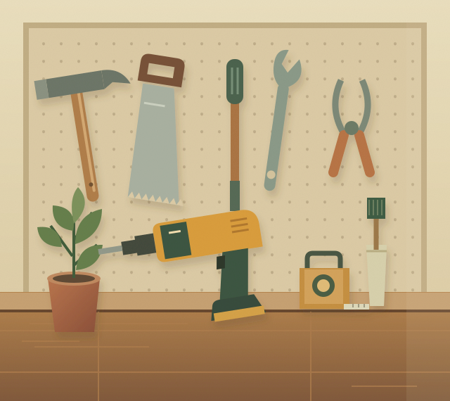

Available to borrow
Available to borrowDIY & home repair
Cordless drill
For shelves, flatpacks and fresh ideas.
Jamie · Maple LaneFree to borrow
The drill for a Saturday project. The ladder for a quick fix. What you need is probably just a few doors away.
A little less buying. A little more sharing.
That's the neighbourly way.

Borrow it. Make it. Pass it on.
Useful things, ready for their next chapter.
Available to borrowDIY & home repair
For shelves, flatpacks and fresh ideas.
 Available to borrow
Available to borrow Available to borrow
Available to borrow Available to borrow
Available to borrowA little look at a sample Lantern neighbourhood.
Find just the thing for the project you've been meaning to start.
Agree on a pickup time and get a quick introduction to the tool.
Return it clean and on time, ready for someone else's next idea.
Got something useful sitting idle? Make a little room in your shed and a big difference to a neighbour.
Lend your first tool